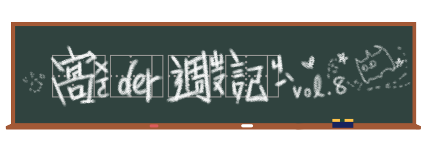

老爸最愛ㄉ勾狗 VS. 最不愛吃青菜ㄉ毛貓，今晚，都幾？
爸爸與狗
為了慶祝父親節(?)，在8月初流傳的meme是「爸爸與狗」，是一個相當溫馨的memeㄋ。
這個meme也很淺顯易懂，是逐字條列+圖的標準格式，不過固定的部分在於字，通常是這樣：「爸爸：不要養狗／家人：*還是養了*／爸爸和狗：」接著搭配一張能顯示出爸爸和狗勾間深厚感情的一張圖。
起源
這種故意凸顯爸爸傲嬌之處的養狗（貓）貼文其實一直以來都存在，畢竟爸爸在家庭中始終都有「不隨意流露情感」的刻板印象，卻會因為家裡養的小寵物而流露出（從來沒有對我流露過的）溺愛表情。
散佈
於是乎在2019年7月29日，一名網友bipolarparadiseyt在Reddit上用巨石強森和狗勾的照片表達了這個情境。隔天，Toby_A270在r/memes上則用一張爸爸和狗狗一起烤肉的溫馨照片，獲得了巨大的迴響。大家開始會使用前面提及的固定格式，去搭配一些怪怪的圖了。
我就說吧
有一張圖精準點評了「爸爸與狗」的現象（使用的是蜘蛛人報告中的meme），解釋為啥全天下的爸爸都不想養狗，它說：
「爸爸們之所以不想要養狗，是因為他們知道他們會是那個負責餵牠、陪牠散步、和牠玩的人。他們會變成最好的朋友，然後爸爸會是勾狗死掉的時候最傷心的那個，不是小孩，但他還得負責安慰家裡所有人。」
QQ爸爸們真ㄉ太偉大，btw大家養寵物的時候都要審慎思考ㄛ。
困惑貓貓
你可能不知道，8月8日除了是父親節以外，也是「國際貓貓日」，這個貓奴社會真的是不缺貓咪相關ㄉ節日。而最近流行的毛咪meme是這個困在蔬菜前面的小傢伙。
起源
這個meme其實結合了兩張反應用圖，左邊是金髮女子咆哮指控，右邊才是困惑貓貓。左邊的這名女子Taylor Armstrong來自美國的真人秀節目《比佛利山莊嬌妻》（The Real Housewives of Beverly Hills），在第二季第14集，她與別人發生爭吵，而另一名演員Taylor Armstrong試著要安撫她。
在節目播出的隔天，也就是2011年12月6日，Taylor Armstrong哭喊指控的畫面被《每日郵報》英國知名的八卦報紙，僅次於《太陽報》。截圖po上網。
不愛吃菜菜
至於貓貓則單純許多，牠在2018年6月19日被自家奴才放上tumblr，看起來相當討厭蔬菜。這隻叫作Smudge意思是汙點，在國外是毛貓常見ㄉ名字，但用在這裡我猜是故意der。胖胖白貓也有自己的Instagram，另一則貼文寫說牠也「No likey chikin（不喜歡雞肉）」。
散佈
2019年5月1日，Twitter用戶@MISSINGEGIRL把兩張相片放在一起造成驚人的故事效果，推文有超過27.5萬個喜歡。在這條推文的回覆中有不少人回文惡搞，其中一名網友@lc28__將這張圖套進了字加圖的梗圖模式。
6月9日，Reddit一名網友提供了合圖的素材，當天馬上被重製成一張新圖，而且文字自此開始變為左右兩邊指控者和被指控者的狀態描述。
如果大家對困惑貓貓有興趣的話，不久前牠家奴才剛在FB貓咪社團正式公布這隻貓貓是他們家的，順而展開了各式商品的攻略，想把Smudge帶回家ㄉ人可以看看這裡→